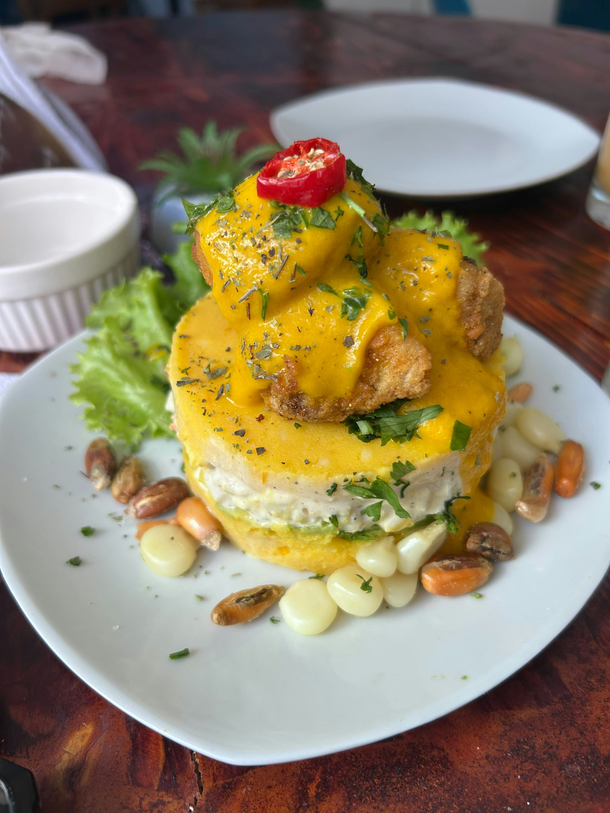
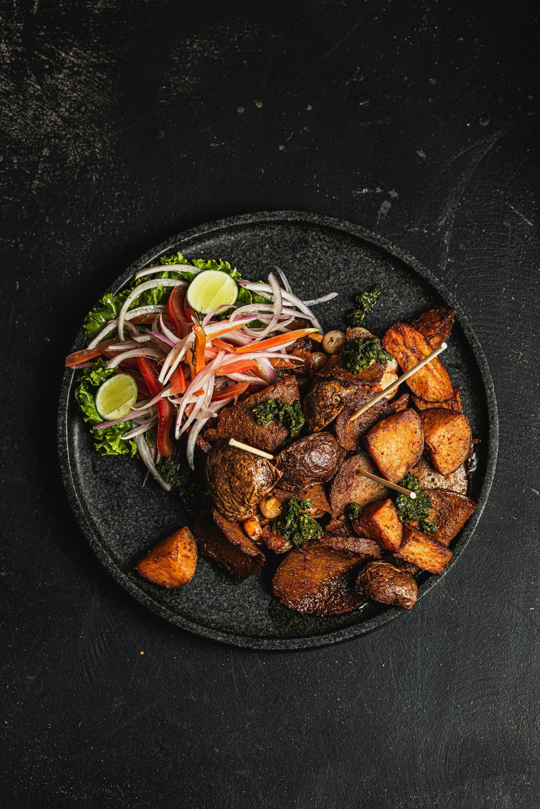
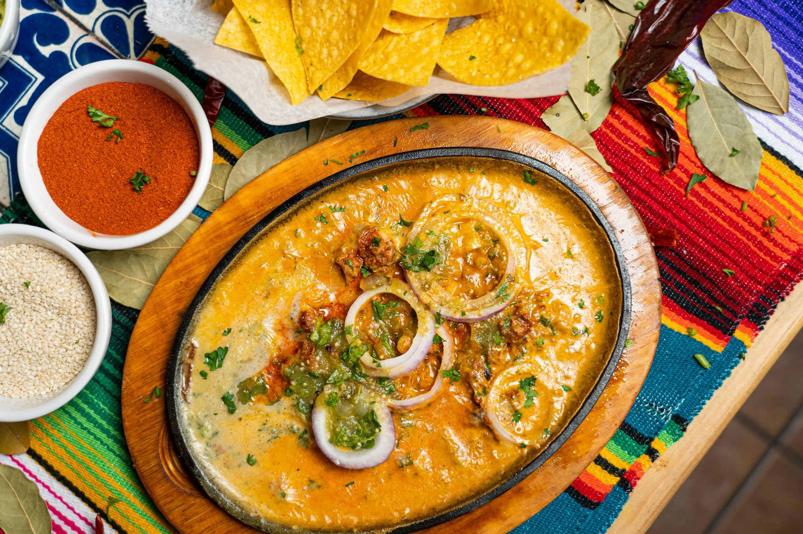
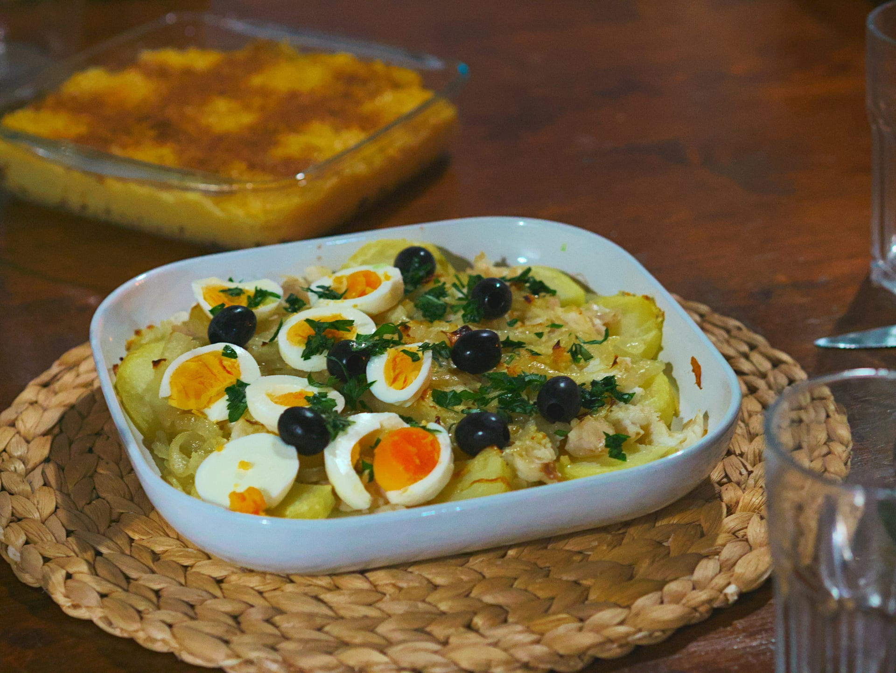
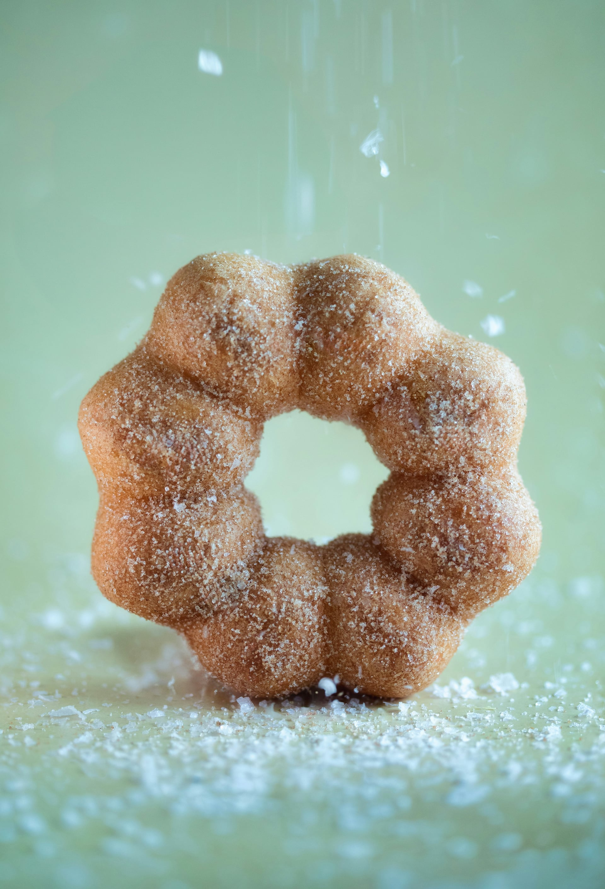
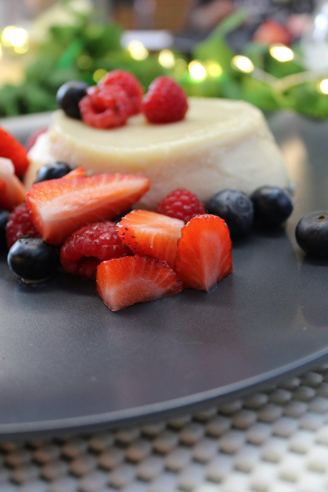

Categorías
Explora nuevas recetas de la diversidad culinaria peruana
Platos tradicionales

El ceviche, plato emblemático de la cocina peruana, consiste en pescado crudo marinado en salsa de limón y sal con un toque picante a ají limón y crujiente de cebolla roja
La influencia china es apreciable en este plato de lomo vacuno donde la soja y el ají se complementan para dar un sabor exótico a este plato

Entrantes

Plato popularizado durante las guerras de independencia del siglo XIX, consiste en un base de patata amarilla prensada y sazonada con ají y limón
Brocheta de carne de vacuno marinada y asada a la parrilla acompañadas de patatas y salsa de ají

Platos principales

Plato tradicional que combina carne de ave deshilachada en una cremosa salsa de ají amarillo, pan y queso. Tradicionalmente, se sirve acompañado de arroz blanco y patatas
Patatas hervidas y cubierta con una deliciosa salsa de ají amarillo, queso y leche. Suelen venir acompañadas de huevo duro y aceituna

Postres

Masa frita de harina y zapallo bañada en miel de chancaca. Esta masa parecida a los buñuelos, era el postre típico del Virreinato del Perú
Postre tradicional compuesto de un bizcocho esponjoso bañado en una mezcla de leche evaporada, leche condensada y crema de leche. Suele decorarse con merengue o fruta fresca
